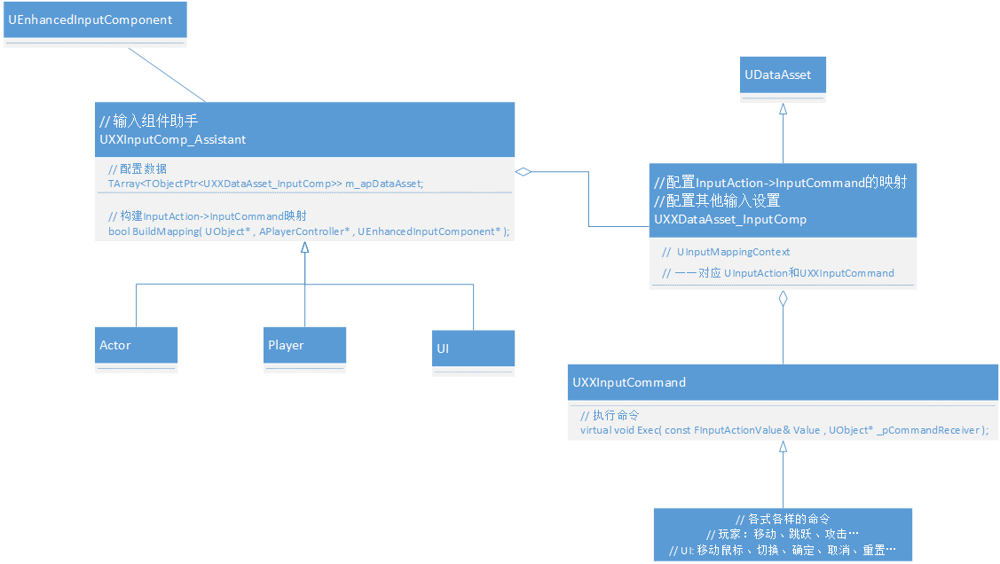

# 一、背景
以前的我
/* 伪代码 if( Press(ButtonSpace) ) { Jump(); } */ // 或者UE5的输入绑定 EnhancedInputComponent->BindAction(JumpAction, ETriggerEvent::Triggered, this, &ACharacter::Jump);很明显输入和游戏行为绑定死了，需求一变全部改！
现在的我？
- 受到《游戏编程模式》中命令模式的启发，决定重新设计上面的输入系统。
# 二、命令模式
- 命令模式简介：发送者将请求以命令的形式包裹在命令对象中，并将命令传给接受者。顺序：调用者→命令→接受者。
- 参考《游戏编程模式》- 命令模式
- 命令就是面向对象的回调。
- 上面 UE5 的代码，输入回调绑定的就是面向对象实例函数的回调，直接将输入跟游戏行为（ACharacter::Jump）耦合，很难再扩展。
- 优点： 1、降低了系统耦合度（解耦发送者和命令接收者）。 2、新的命令可以很容易添加到系统中去
# 三、输入架构

- 命令创建发送者：EnhancedInputComponent/UXXInputComp_Assistant
- 命令：UXXInputCommand
- 命令接收者 / 命令接受者：UObject*
# I、简介
- 数据: UXXDataAsset_InputComp（编辑器可配置、可复用）
- UXXInputComp_Assistant 根据数据绑定回调：UInputAction -> UXXInputCommand
- 命令可以创建无数个，与 InpuAction 随心配！
# II、答疑解惑
UXXInputComp_Assistant 为什么不直接继承 EnhancedInputComponent？
答：我其实也想继承的，毕竟没有多少代码，新创建一个 ActorComponent 实在不划算，但是 InputComponent 被设置了蓝图隐藏和 NotBlueprintable！
我不想改引擎源码，所以只能创建一个新的组件去实现 InputAction->InputCommand 的绑定。UXXInputComp_Assistant 为什么要单独区分 Actor、玩家和 UI，配置和绑定不都一样吗？
答：1. UserWidget 不是一个 Actor，InputComponent 只是组合在里面！这就导致 Actor 和 UI 要分开处理，因为命令接收者 / 命令接受者不一样。
2. 可能会有些特殊的功能，比如：玩家按键自定义命令也需要单独区分？
答：是的。UI、Actor、玩家处理输入的逻辑不一样，比如：点击手柄的 A 按钮，UI 可能是确认，玩家可能是跳跃，Actor1 可能是消失，Actor2 可能是打开门...。
# 四、未来可期
- NPC 的行为也靠相同接口的命令驱动会怎么样？（NPC 发送命令者可警戒系统、任务系统、周围环境...）
- 最明显的是各个系统和 NPC 行为解耦了。
- 再进一步是不是可以实现七十二变、夺舍等功能了，这也太棒了吧！（因为命令接口一模一样）。